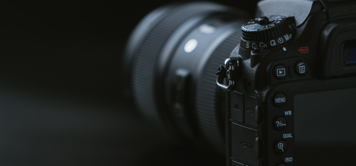

Uma câmera fotográfica (português brasileiro) ou câmara fotográfica
(português europeu) é um instrumento óptico para captação de imagens na
forma de fotografias individuais, que são armazenadas localmente,
transmitidas para outro local, ou ambos. Como capta informações sobre
elementos externos sem ter contato físico com eles, tecnicamente é
classificada como um dispositivo de sensoriamento remoto.
A palavra câmera vem de camera obscura, latim para câmera escura,
um dispositivo originalmente usado para projetar uma imagem sobre
uma superfície plana. Tendo evoluído desse aparato, mesmo o
equipamentos modernos mais sofisticados guardam seu princípio fundamental:
uma caixa à prova de luz com um orifício em um dos lados. Semelhantemente
ao funcionamento do olho humano, por esse orifício penetram raios de luz e
outras porções de espectro eletromagnético que são registrados em um filme
fotográfico ou por um sensor de imagem. Além disso, tipicamente câmeras
contam com objetivas, obturadores e diafragmas, que controlam a quantidade de
luz recebida; um sistema de foco, que permite ajustar a distância entre a objetiva
e o filme ou sensor; e um visor, que auxilia na composição da cena que se quer fotografar.
Até o final do século XX o filme fotográfico foi a mídia primária para
câmeras fotográficas e de vídeo, mas, embora sua utilização ainda ocorra em certos
nichos, sua dominância foi interrompida pela emergência de câmeras digitais,
que utilizam um sensor de imagem para captar imagens, convertendo-as em sinais
elétricos que podem ser armazenados, exibidas em uma tela e impressas.
Câmeras digitais e analógicas compartilham a maior parte de suas características
e componentes, e a principal diferença entre ambas é que na câmera digital o
filme dá lugar a um sensor de imagem. Além disso, normalmente câmeras digitais
são capazes de exibir imagens em uma tela imediatamente após serem gravadas e
permitem apagar imagens gravadas em sua memória. Câmeras digitais mais avançadas
frequentemente incluem outras funcionalidades como produção de fotografias em high
dynamic range (HDR), junção de múltiplas imagens (photo stitching),
múltiplas capturas por segundo e outros.